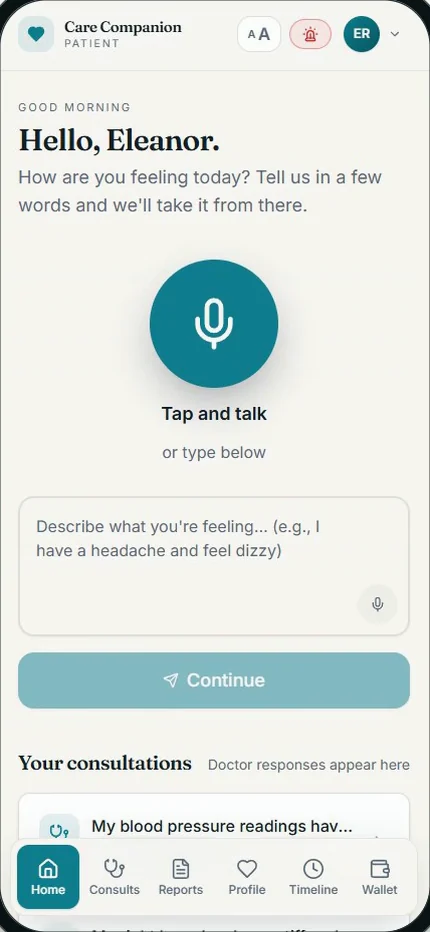

Care Companion
An AI front door to care for older adults. Say what feels wrong in your own words, and Care Companion asks gentle follow-up questions, works out how urgent it is and passes the case to the right doctor, who makes every clinical decision.
- Sector
- Healthcare
- Stage
- Built
- Built for
- Older adults, their families and their doctors
Who it's for
Patients
One big button to talk, large text, and answers in plain language.
Families
Follow a parent's care with their permission, even from another city.
Doctors
An urgency-sorted queue with the AI's summary, the conversation and the patient's history side by side.
Clinics and operators
Users, doctors, cases and payments in one console, with an audit log of every privileged action.
What it does
Talk, don't type
Patients describe symptoms by voice or text, and the questions can be read aloud.
Questions that fit
Follow-ups draw on the patient's medications and history instead of a generic checklist.
Clear triage
How urgent it is, likely causes, what to do now, and which warning signs mean getting help straight away.
The right doctor
Cases route by specialty and availability, and move to the next doctor if nobody accepts within ten minutes.
Plain-language answers
The doctor's reply is rewritten in simple words and saved to a searchable health timeline.
Paperwork, drafted
Suggested diagnosis and billing codes, each backed by a quote from the conversation, for the doctor to review and sign off.

How it works
Speak
The patient says what feels wrong, by voice or by tapping.
Follow-up
The assistant asks until it has enough to act on.
Triage and match
Urgency is scored and the case goes to the best available doctor.
The doctor replies
They review the summary and history, then write the diagnosis and plan.
Plain English
The answer comes back in simple words, shared with family if the patient allows.
Where it stands
Built. The patient app, doctor portal and operator console work end to end, including the wallet and payments.
Where the line is
- The AI handles intake, triage, summaries and translation. It never diagnoses or prescribes.
- A licensed doctor reviews every case and can override any AI suggestion before replying.